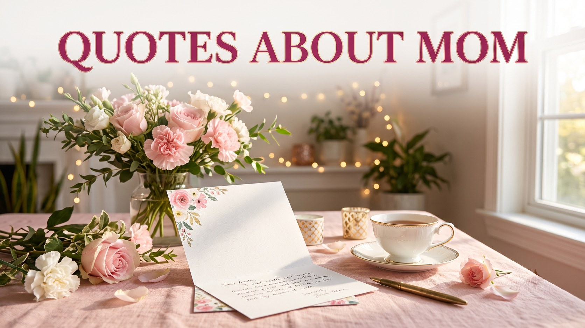

Mother's Day Quotes: Beautiful Sayings About Mom
Published October 10, 2026 · Updated October 10, 2026 · By EventBuzz Team

Some feelings are too big for ordinary sentences, which is why we reach for a quote. This collection gathers beautiful original sayings about mothers, written fresh for cards, captions and speeches, alongside a small number of timeless classics from authors long in the public domain, each credited by name. For full ready-to-send messages rather than short sayings, see our Mother's Day wishes from sons and daughters.
Use these lines anywhere a mother's love deserves underlining: inside a greeting card, under a childhood photograph, on a gift tag, or as the closing line of a Mother's Day toast. A quote works best when you add one personal sentence after it, so the famous feeling becomes unmistakably yours.
Beautiful Original Sayings About Mom
These sayings were written for this collection, in a style made to sit gracefully inside a card or beneath a photograph.
A mother is the first home we ever know, and the one we carry with us forever.
Behind every brave child stands a mother who believed first.
A mother's love does not keep count; it simply keeps giving.
She turned ordinary days into a childhood worth remembering.
Mothers plant kindness in soil they may never see bloom, and the world flowers anyway.
The hands that rocked the cradle also steadied the whole world, one family at a time.
A mother hears what her child does not say, and answers it anyway.
Long after we outgrow her lap, we never outgrow her love.
Short Mother's Day Quotes for Cards
Brief lines with a complete heart, sized for card fronts, gift tags and handwritten notes.
Home is wherever Mom is.
A mother's hug outlasts childhood.
Love, spoken fluently by mothers everywhere.
First my mother, forever my friend.
She made love look like everyday life.
Everything I am, she helped me to be.
Mom: the original miracle worker.
Grateful today, and quietly, every day.
Need something longer and more personal than a quote? Our Mother's Day wishes include full emotional messages you can copy into the inside of the card.
Mother's Day Quotes for Captions and Social Posts
Caption-friendly sayings written to sit under a photo of you and your mom, old or new.
Some superheroes wear aprons and answer to Mom.
The older I get, the more she becomes my hero and my home.
Her love is the caption under every good thing in my life.
Not just my mother; my favourite person to tell everything.
Thank you for being the calm in every storm I have weathered.
Every version of me owes something to her.
Timeless Classics About Mothers
A few sayings from writers of earlier centuries, in the public domain, have earned their place in Mother's Day cards for generations. Each is credited to its author.
"A mother is a mother still, the holiest thing alive." — Samuel Taylor Coleridge (1772–1834)
"The mother's heart is the child's schoolroom." — Henry Ward Beecher (1813–1887)
"Youth fades; love droops; the leaves of friendship fall; a mother's secret hope outlives them all." — Oliver Wendell Holmes Sr. (1809–1894)
"A mother's arms are made of tenderness, and children sleep soundly in them." — Victor Hugo (1802–1885)
Pair one classic with one sentence of your own and the card becomes both timeless and personal. For the date, history and ways to celebrate, see our Mother's Day 2027 guide.
How to Choose the Right Quote
Match the quote to the mother and the moment. For a card she will keep, choose a beautiful saying and write one memory beneath it. For a photo caption, pick a short warm line that leaves room for your own words. For a speech or toast, open with a classic, then tell one small true story that proves it. The quote supplies the music; your sentence supplies the meaning.
If words are still hard to find, remember that no mother has ever graded a card. She will read the effort, not the eloquence, and she will keep it longer than you expect.
Frequently Asked Questions
What is the most beautiful Mother's Day quote?
Beauty depends on the reader, but a widely loved style names her as a first home: "A mother is the first home we ever know, and the one we carry with us forever." The original sayings above offer many in that spirit.
What is a short Mother's Day quote for a card?
"Home is wherever Mom is" and "First my mother, forever my friend" both fit on a card front and leave space for your own handwritten note inside.
Can I use these quotes on Instagram or WhatsApp?
Yes. The original EventBuzz sayings are free for personal use in captions, stories, status updates and cards. Attributed classics should keep their author's name, as shown here.
Who wrote the classic quotes in this collection?
They are credited in place: Samuel Taylor Coleridge, Henry Ward Beecher, Oliver Wendell Holmes Sr. and Victor Hugo, all authors from before 1929 whose works are in the public domain.
Where can I find full Mother's Day messages instead of quotes?
Our Mother's Day wishes guide has complete messages from a son and a daughter, emotional long wishes and short card lines you can copy as they are.
Conclusion
The right quote turns a card into a keepsake. Choose the line that sounds most like your mother, add one sentence only you could write, and let it travel. For complete greetings, visit our Mother's Day wishes collection.
Happy Mother's Day — may every mom feel as cherished as she truly is.